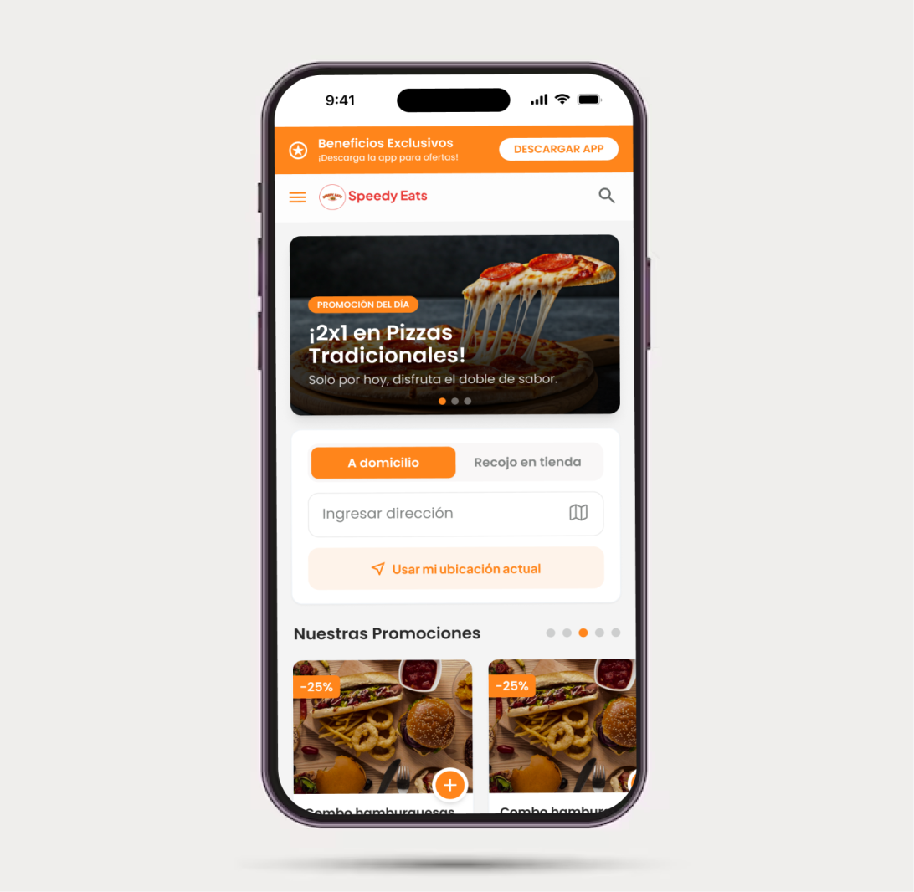

FOODDELIVERY Ecosistema Digital
Diseño de una experiencia digital enfocada en optimizar activación, reducir fricción operativa y mejorar métricas de conversión dentro del ecosistema gastronómico.

Problema y Solución
Sobrecarga Cognitiva y Pérdida Operativa.
Fricción crítica en la comunicación entre administradores de Productos y Usuarios. Gestión ineficiente de Ventas resultando en pérdidas de Ventas del 22%.
Motor de Gestión Centralizado.
Implementación de una interfaz centralizada para la gestión de servicios y comunicación en tiempo real. Reducción de la carga cognitiva mediante flujos de trabajo optimizados.
Contexto De Negocio
Redefiniendo el onboarding para operadores gastronómicos.
La plataforma anterior presentaba una curva de aprendizaje pronunciada, resultando en pérdidas significativas durante la primera semana de uso.
Aumentar activación
Garantizar que el usuario complete su perfil en menos de 5 minutos.
Reducir abandono
Minimizar la fricción en el proceso de carga de productos y menús.
Incrementar conversión
Transformar usuarios de prueba en suscriptores recurrentes mediante valor inmediato.
Decisiones clave
Mostrar resultados antes de pedir datos complejos.
Estructura lineal y modular asistida por IA.
Foco absoluto en la tarea crítica del momento.
Completitud de Onboarding
Tasa de Abandono
Creación de Tiendas
Conversión Final
Estructura simplificada.
Control total.
